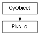

class cymel.core.cyobjects.plug_c.Plug_c¶

- class cymel.core.cyobjects.plug_c.Plug_c(src)¶
Bases:
CyObjectCore functionality supported by the
Plugclass.Methods:
addProxy(name[, node])Generate proxy attributes for this plug.
affectedAttrs([worldSpace, pcls])Get a list of plugs that this plug affects within the same node.
affectingAttrs([worldSpace, pcls])Get a list of plugs that this plug affects within the same node.
alias()Get an alias.
Get a function to set Null without supporting undo.
Get a function to set the current value without supporting undo.
apiSetDefault(val[, reset, force])Set the default value of an attribute on an internal basis without supporting undo.
apiSetDefaultu(val[, reset, force])Set default values of attributes for each UI setting without supporting undo.
apiSetLocked(val)Sets the lock state of the plug without supporting undo.
array()Get multiple attributes from an element.
attrName()Get the plug name starting with a dot without including the node name.
child(idx)Get the idxth child of the compound attribute.
childNames([long])Get a list of child attribute names of a compound attribute.
children()Get the list of children of a compound attribute.
connectedElement(idx)Get connected elements of multi-attribute by physical index.
Get a list of connected element indices of a multi-attribute.
Get a list of connected elements of a multi-attribute.
connections([s, d, c, t, et, scn, source, ...])Get a list of connected plugs and nodes.
default()Get the default value in internal units.
defaultu()Get the default value for each UI setting.
destinations(**kwargs)Get a list of plugs or nodes to output to, skipping the unitConversion node.
destinationsWithConversions(**kwargs)Get a list of plugs or nodes to output to without skipping unitConversion nodes.
Get the behavior when deleting a multi-attribute element.
element(idx)Get the element of multi-attribute by physical index.
elementExists([idx])Whether a multi-attribute element exists.
elements()Get a list of multi-attribute elements.
enumName(val)Get the name from the value of the enum attribute.
enumValue(key)Get the value from the name of an enum attribute.
evaluate()Rate this plug.
Obtain the number of elements after evaluating multi-attributes.
When called, you get a function that can evaluate the plug.
get()Get the attribute value in internal units.
Get the name of the current value from an enum type attribute.
getM()Get matrix value from matrix type attribute.
Get all associated proxy attributes.
getu()Get the attribute value for each UI setting.
hasMax()Does it have a maximum value?
hasMin()Does it have a minimum value?
hasNodeFn(fn)Whether the node is compatible with the specified function type.
hasProxy()Whether it has an associated proxy attribute.
Whether it has a soft maximum.
Does it have a soft minimum?
Whether the matrix type attribute has a
Transformationvalue.index()Get the logical index of a multi-attribute element.
Whether multi-element indices are meaningful.
indices()Get a list of logical indexes for a multi-attribute.
inputs(**kwargs)Obtain upstream connections.
Whether to affect the viewport.
Does it affect world space?
isArray()Multi-attribute or not?
Whether the attribute is from a referenced file.
isCached([static])Whether the value is cached in the data block.
isCaching([static])Whether the value is cached in the data block.
isChannelBox([static])Whether to send it to the channel box even if it is not keyable.
isChild()Whether it is a child attribute of a compound.
Compound attribute or not.
Is it possible to connect?
isConnected([ancestors, children])Whether it has an input or output connection.
isConnectedTo(dst)Checks if there is a connection from this plug to the specified plug.
isDestination([ancestors, children])Whether it has an input connection.
Is it a dynamic attribute?
Is it a multi-attribute element?
Whether this is forcing the node to be a unique attribute name.
Is it an extended attribute?
isFreeToChange([ancestors, children])Checks whether the value of the plug can be changed.
isFromReferencedFile([ancestors, children])Whether to have input connections created with reference files.
isHidden()Is it a hidden attribute?
Whether connections are ignored during rendering.
Hint to DG that this attr may not always be used when computing the attrs which are dependent upon it.
Alternative name for
indexMatters.Is it an internal attribute?
Is it Keyable?
isLocked([ancestors, children])Locked or not.
isMulti()Alternative name for
isArray.Alternative name for
isNewAttribute.Is the attribute a non-reference?
Whether the node is from a reference file.
isNodeType(typename)Whether the node is a derived type of the specified type.
Does it contain unresolved multi-attribute elements?
Whether this is a procedural plug that Maya uses internally.
isProxy()Is it a proxy attribute?
Can it be read (can it get a value or serve as an input source for a connection)?
Render source or not.
isSettable([ancestors, children])Alternative name for
isWritableNow.isSource([ancestors, children])Whether it has an output connection.
Whether it is saved to a file.
Whether the API's MArrayDataBuilder is used.
Is it used as a color?
Whether it is used as a file name.
In the case of an
isWorldSpaceelement plug, whether the index is consistent with the instance number of the DAG node.Whether it is a multi-attribute tied to a DAG node instance.
Is it possible to write to it (can it set a value or serve as an output destination for a connection)?
isWritableNow([ancestors, children])Are the plug values changeable?
leaves([evaluate])Go down the mulch and compound hierarchy to get a list of leaf plugs.
longName()Get the long name of the attribute.
max()Gets the maximum value set for the attribute in internal units.
maxu()Get the maximum value set for an attribute in UI setting units.
mfn()Get the Python API 2 function set.
mfn1()Get the Python API 1 function set.
mfn1_()Omit
checkValidto get the Python API 1 function set.mfn_()Omit
checkValidto get the Python API 2 function set.min()Gets the minimum value set for the attribute in internal units.
minu()Get the minimum value set for the attribute in UI setting units.
mplug()Get MPlug for Python API 2.
mplug1()Get MPlug for Python API 1.
mplug1_()Omit
checkValidto get MPlug of Python API 1.mplug_()Omit
checkValidto get MPlug of Python API 2.multi()Alternative name for
array.newObject(data)Create an instance with internal data.
nextAvailable([start, asPlug, checkLocked, ...])Get the next free index of the multiplug's input.
niceName([noWorldIndex])Get a nice name.
node()Get a node.
nodeName()Get the node name.
nodeType()Get the node type name.
noderef()Get a weak reference wrapper for a node.
Get the number of children of a compound attribute.
Get the number of elements with multi-attribute connections.
Get the number of evaluated elements of a multi-attribute.
outputs(**kwargs)Obtain downstream connections.
parent()Get the parent's compound attributes.
pathName([useLongName, useCompression])Returns the unique pathname of the attribute. Does not include index.
plug(name)Get the lower plug.
plugName([short, fullAttrPath])Get the plug name.
plug_(name)Omit
checkValidto get the lower level plug.Get master plug for proxy attributes.
root([completely])Obtain a compound root plug.
Get the attribute's short name.
softMax()Gets the soft maximum value set for the attribute in internal units.
softMaxu()Get the soft maximum value set for the attribute per UI setting.
softMin()Gets the soft minimum value set on the attribute in internal units.
softMinu()Get the soft minimum value set for an attribute per UI setting.
source(**kwargs)Get the input plug or node while skipping the unitConversion node.
sourceWithConversion(**kwargs)Get the input plug or node without skipping the unitConversion node.
subType()Gets the type name of the element of a numeric compound (e.g. double3) attribute.
type()Get the attribute type name. Types that cannot be determined are marked as ''.
Get the appropriate element for the
isWorldSpaceplug.Attributes:
Method Details:
- addProxy(name, node=None, **kwargs)¶
Generate proxy attributes for this plug.
- Parameters:
name (str) – Long name of the attribute.
node (
Node) – Node to add attributes to. If omitted, it becomes the node of this plug.kwargs – You can also specify optional arguments for
Node.addAttr.
- Return type:
None or
Plug
- affectedAttrs(worldSpace=False, pcls=None)¶
Get a list of plugs that this plug affects within the same node.
Conversely, if you want to get the influence source, you can use
affectingAttrs.Also, although this method can retrieve plugs from actual plugs, you can use the utility function
affectedAttrNamesto look up node types and attribute names rather than actual nodes or plugs.
- affectingAttrs(worldSpace=False, pcls=None)¶
Get a list of plugs that this plug affects within the same node.
Conversely, if you want to get the affected destinations, you can use
affectedAttrs.Also, although this method can retrieve plugs from actual plugs, you can use the utility function
affectingAttrNamesto look up node types and attribute names rather than actual nodes or plugs.
- apiGetSetNullProc()¶
Get a function to set Null without supporting undo.
The resulting function does not hold a reference to this object.
- Return type:
- apiGetUndoSetProc()¶
Get a function to set the current value without supporting undo.
The resulting function does not hold a reference to this object.
- Return type:
- apiSetDefault(val, reset=False, force=False)¶
Set the default value of an attribute on an internal basis without supporting undo.
- apiSetDefaultu(val, reset=False, force=False)¶
Set default values of attributes for each UI setting without supporting undo.
- apiSetLocked(val)¶
Sets the lock state of the plug without supporting undo.
- Parameters:
val (bool) – Value to set.
- attrName()¶
Get the plug name starting with a dot without including the node name.
This is the shortest name that identifies the plug, with the node name removed.
It differs from
shortNamein that it contains a multi-element index and may contain a resulting compound hierarchy.- Return type:
- child(idx)¶
Get the idxth child of the compound attribute.
- childNames(long=False)¶
Get a list of child attribute names of a compound attribute.
- connectedElement(idx)¶
Get connected elements of multi-attribute by physical index.
The logical indexes are arranged in ascending order.
If you just want to get the index,
connectedElementIndicesis more efficient.- Parameters:
idx (int) – Physical index in the range 0 to
numConnectedElements()-1.- Return type:
Note
The order of the plugs obtained using the API MPlug.connectionByPhysicalIndex(i) may become disordered after repeated connection operations, and it seems that they will be sorted when the scene is reopened. However, this method guarantees that the logical index is obtained in ascending order.
- connectedElementIndices()¶
Get a list of connected element indices of a multi-attribute.
The logical indexes are arranged in ascending order.
If you just want to get the index, it is more efficient than
connectedElementorconnectedElements.- Return type:
Note
The order of the plugs obtained using the API MPlug.connectionByPhysicalIndex(i) may become disordered after repeated connection operations, and it seems that they will be sorted when the scene is reopened. However, this method guarantees that the logical index is obtained in ascending order.
- connectedElements()¶
Get a list of connected elements of a multi-attribute.
The logical indexes are arranged in ascending order.
If you just want to get the index,
connectedElementIndicesis more efficient.- Return type:
Note
The order of the plugs obtained using the API MPlug.connectionByPhysicalIndex(i) may become disordered after repeated connection operations, and it seems that they will be sorted when the scene is reopened. However, this method guarantees that the logical index is obtained in ascending order.
- connections(s=True, d=True, c=False, t=None, et=False, scn=False, source=True, destination=True, connections=False, type=None, exactType=False, skipConversionNodes=False, asPair=False, asNode=False, checkChildren=True, checkElements=True, index=None, pcls=None)¶
Get a list of connected plugs and nodes.
- Parameters:
s|source (bool) – Obtain upstream connections.
d|destination (bool) – Obtain downstream connections.
c|connections|asPair (bool) – The connecting source plug also gets air.
t|type (str) – Limit to specified node types.
et|exactType (bool) – If type is specified, whether to allow only an exact match with the specified type without allowing derived types.
scn|skipConversionNodes (bool) – Whether to skip unitConversion type nodes.
asNode (bool) – Get the connection destination as a node instead of a plug.
checkChildren (bool) – Also check the lower layer of the compound. It is True by default, so you can disable it by specifying False.
checkElements (bool) – Also check multi-plug elements. It is True by default, so you can disable it by specifying False.
index (int) – Specify an index if you want only one result. Negative numbers can also be specified. The result is a single result rather than a
list(None if not available). Even if a value outside the range is specified, an error will not occur and None will be returned.pcls – The class of the plug object you want to get. If omitted, it will be the same class as this object itself.
- Return type:
- default()¶
Get the default value in internal units.
- defaultu()¶
Get the default value for each UI setting.
- destinations(**kwargs)¶
Get a list of plugs or nodes to output to, skipping the unitConversion node.
This is equivalent to specifying the following options for
outputs, and all other options can be specified.skipConversionNodes=True
checkChildren=False
checkElements=False
- Return type:
- destinationsWithConversions(**kwargs)¶
Get a list of plugs or nodes to output to without skipping unitConversion nodes.
This is equivalent to specifying the following options for
outputs, and all other options can be specified.checkChildren=False
checkElements=False
- Return type:
- element(idx)¶
Get the element of multi-attribute by physical index.
The logical indexes are arranged in ascending order.
- elementExists(idx=None)¶
Whether a multi-attribute element exists.
- elements()¶
Get a list of multi-attribute elements.
The logical indexes are arranged in ascending order.
- Return type:
- enumName(val)¶
Get the name from the value of the enum attribute.
- enumValue(key)¶
Get the value from the name of an enum attribute.
- evaluate()¶
Rate this plug.
Note
Note that this does not allow you to undo the changes that occur. For example, if an element is added by evaluating a multi-attribute element, it cannot be undone. If you want to do that, you can use
Plug.addElement.
- evaluateNumElements()¶
Obtain the number of elements after evaluating multi-attributes.
- Return type:
Warning
This method is likely to be less efficient than
numElements, but more reliable thannumElements. Note that after calling this method,numElementswill also return the same value.However, output connection plugs may still not be counted. If you want to know the number of connected elements, use
numConnectedElements.
- evaluator()¶
When called, you get a function that can evaluate the plug.
It can be said that
evaluateitself is obtained, but the difference is that it does not hold a reference to itself.- Return type:
- get()¶
Get the attribute value in internal units.
As with MEL, if an element is not specified with the
isWorldSpaceattribute, it will be automatically completed.- Returns:
Attribute value.
- getEnumName()¶
Get the name of the current value from an enum type attribute.
- getM()¶
Get matrix value from matrix type attribute.
The data type matrix attribute can store values in the form of transformation information as well as a matrix, and the
getmethod returns eitherMatrixorTransformationdepending on the format of the value being stored.On the other hand, using this method, you can always get the value in
Matrix, regardless of the format of the value being held.- Return type:
Matrixor None
- getu()¶
Get the attribute value for each UI setting.
As with MEL, if an element is not specified with the
isWorldSpaceattribute, it will be automatically completed.- Returns:
Attribute value.
- hasNodeFn(fn)¶
Whether the node is compatible with the specified function type.
- hasTransformation()¶
Whether the matrix type attribute has a
Transformationvalue.- Return type:
- indexMatters()¶
Whether multi-element indices are meaningful.
connectAttr -na can be used if this value and
isReadableare False.- Return type:
- indices()¶
Get a list of logical indexes for a multi-attribute.
The logical indexes are arranged in ascending order.
- Return type:
- inputs(**kwargs)¶
Obtain upstream connections.
This is equivalent to specifying s=True, d=False for
connections, and all other options can be specified.
- isAttrFromReferencedFile()¶
Whether the attribute is from a referenced file.
Even if the node is from a reference file, any attributes added on it will be False.
Obtains the opposite result of
isNewAttribute.- Return type:
- isCached(static=False)¶
Whether the value is cached in the data block.
- isCaching(static=False)¶
Whether the value is cached in the data block.
- isChannelBox(static=False)¶
Whether to send it to the channel box even if it is not keyable.
- Return type:
- isConnected(ancestors=False, children=False)¶
Whether it has an input or output connection.
- isConnectedTo(dst)¶
Checks if there is a connection from this plug to the specified plug.
- Parameters:
dst (
Plug) – Downstream plug to inspect connections. If a multi-plug withisIndexMattersset to False is specified, the presence or absence of a connection with each element is also checked.- Return type:
- isDestination(ancestors=False, children=False)¶
Whether it has an input connection.
- isEnforcingUniqueName()¶
Whether this is forcing the node to be a unique attribute name.
For Maya 2025 and later, the setting value for each attribute (default is True) is returned, and for earlier versions, True is always returned.
- Return type:
- isExtension()¶
Is it an extended attribute?
- Return type:
Note
What is Extended Attribute? A feature added in 2011 that allows you to add static attributes to existing node types.
- isFreeToChange(ancestors=True, children=True)¶
Checks whether the value of the plug can be changed.
The meaning of the return value is as follows.
0 … Can be changed.
1 … The plug cannot be changed.
2 … Lower plugs cannot be changed (checked only when children=True is specified).
Only if you specify children=True
- Parameters:
- Return type:
Warning
Do not evaluate the return value as
bool. The return value is anenum, and 0 can be changed.Note that static writable flags are not checked, so 0 is returned even if the attribute is immutable in the first place.
If you also want to consider the static state, you can use the
isWritableNowmethod.
- isFromReferencedFile(ancestors=False, children=False)¶
Whether to have input connections created with reference files.
- Parameters:
- Return type:
Note
isAttrFromReferencedFilecan be used to check whether the attribute itself comes from a referenced file.
- isIndeterminant()¶
Hint to DG that this attr may not always be used when computing the attrs which are dependent upon it.
- Return type:
- isIndexMatters()¶
Alternative name for
indexMatters.
- isLocked(ancestors=True, children=False)¶
Locked or not.
- Parameters:
- Return type:
Warning
The default is ancestors=True, so if the upper plug is locked, it will be treated as a lock.
Also, even if you specify False, strict checks are often not possible due to Maya API limitations. Therefore, if it is locked at a higher level but it is unknown whether the plug itself is locked, 1 is returned instead of True.
- isNewAttr()¶
Alternative name for
isNewAttribute.
- isNewAttribute()¶
Is the attribute a non-reference?
True if the node does not belong to the reference file, or if the attribute was added after referencing the file.
Obtains the opposite result of
isAttrFromReferencedFile.- Return type:
- isNodeType(typename)¶
Whether the node is a derived type of the specified type.
- isNotInstanced()¶
Does it contain unresolved multi-attribute elements?
True if it is not elementized or contains -1 elements.
- Return type:
- isReadable()¶
Can it be read (can it get a value or serve as an input source for a connection)?
- Return type:
- isSettable(ancestors=True, children=True)¶
Alternative name for
isWritableNow.
- isSource(ancestors=False, children=False)¶
Whether it has an output connection.
- isValidWorldElement()¶
In the case of an
isWorldSpaceelement plug, whether the index is consistent with the instance number of the DAG node.True is also returned if it is not
isWorldSpacein the first place, is not an element plug, or is an unresolved index element (-1).- Return type:
- isWritable()¶
Is it possible to write to it (can it set a value or serve as an output destination for a connection)?
- Return type:
- isWritableNow(ancestors=True, children=True)¶
Are the plug values changeable?
- leaves(evaluate=False)¶
Go down the mulch and compound hierarchy to get a list of leaf plugs.
- max()¶
Gets the maximum value set for the attribute in internal units.
- maxu()¶
Get the maximum value set for an attribute in UI setting units.
- mfn()¶
Get the Python API 2 function set.
- Return type:
MFnAttribute derivation
- mfn1()¶
Get the Python API 1 function set.
- Return type:
MFnAttribute derivation
- mfn1_()¶
Omit
checkValidto get the Python API 1 function set.- Return type:
MFnAttribute derivation
- mfn_()¶
Omit
checkValidto get the Python API 2 function set.- Return type:
MFnAttribute derivation
- min()¶
Gets the minimum value set for the attribute in internal units.
- minu()¶
Get the minimum value set for the attribute in UI setting units.
- mplug1_()¶
Omit
checkValidto get MPlug of Python API 1.- Return type:
- mplug_()¶
Omit
checkValidto get MPlug of Python API 2.- Return type:
- classmethod newObject(data)¶
Create an instance with internal data.
Internal data is assumed to be a black box, and even when overriding this method, the base method must be called to complete the process.
If you want to extend internal data, also override
internalData.- Parameters:
cls (
type) – Class of instance to generate.data – Internal data to be set in the instance.
- Return type:
指定クラス
- nextAvailable(start=-1, asPlug=False, checkLocked=True, checkChildren=True)¶
Get the next free index of the multiplug’s input.
Can be used not only for the
isIndexMatterssetting.- Parameters:
start (int) – Index to start the search. By default, it starts from the next index of the last connection. If you want to find intermediate indexes, specify 0, etc.
asPlug (bool) – Get the result with
Plug.checkLocked (bool) – Skip locked plugs.
checkChildren (bool) – Also check the compound children and the mulch within them.
- Return type:
- numConnectedElements()¶
Get the number of elements with multi-attribute connections.
You can use
connectedElementto get elements based on this number.- Return type:
Note
This is the most reliable method when you want to get the number of connections. Output-only plugs that may not be accessible with
numElementsorevaluateNumElementsare also counted.
- numElements()¶
Get the number of evaluated elements of a multi-attribute.
You can use
elementto get the element based on this number.- Return type:
Warning
Note that plugs that are connected but not evaluated are not counted.
If you want to guarantee evaluation, use
evaluateNumElements. After callingevaluateNumElements, this method will return the same value, and operations that depend on it will work as expected.
- outputs(**kwargs)¶
Obtain downstream connections.
This is equivalent to specifying s=False, d=True for
connections, and all other options can be specified.
- pathName(useLongName=True, useCompression=True)¶
Returns the unique pathname of the attribute. Does not include index.
For Maya 2025 and later, non-unique names will return paths separated by . (dot). If it is a unique name and useCompression=True (default) or before 2024, a single attribute name will always be returned.
- Parameters:
useLongName (bool) – The default, True, uses long names. If set to False, the short name will be used.
useCompression (bool) – The default value of True returns the shortest possible path name (partial path name in DAG paths). If False is specified, the path name from the top level will be returned, but the leading dot will not be added as long as it is unique (API behavior).
- Return type:
- plug(name)¶
Get the lower plug.
It can be retrieved in the same way as a Python attribute, but this method is provided in case there is a conflict with the Python name.
- plugName(short=False, fullAttrPath=False)¶
Get the plug name.
- plug_(name)¶
Omit
checkValidto get the lower level plug.It can be retrieved in the same way as a Python attribute, but this method is provided in case there is a conflict with the Python name.
- proxyMaster()¶
Get master plug for proxy attributes.
If it is not a proxy, it returns itself, and if it is a proxy with no master connected, None is returned.
- Return type:
- root(completely=False)¶
Obtain a compound root plug.
- softMax()¶
Gets the soft maximum value set for the attribute in internal units.
- softMaxu()¶
Get the soft maximum value set for the attribute per UI setting.
- softMin()¶
Gets the soft minimum value set on the attribute in internal units.
- softMinu()¶
Get the soft minimum value set for an attribute per UI setting.
- source(**kwargs)¶
Get the input plug or node while skipping the unitConversion node.
This is equivalent to specifying the following options for
inputs, and all other options can be specified.skipConversionNodes=True
checkChildren=False
checkElements=False
index=0
- sourceWithConversion(**kwargs)¶
Get the input plug or node without skipping the unitConversion node.
This is equivalent to specifying the following options for
inputs, and all other options can be specified.checkChildren=False
checkElements=False
index=0
- subType()¶
Gets the type name of the element of a numeric compound (e.g. double3) attribute.
If a general compound is of a type that should be treated the same as a numerical compound, that type is returned. For example, the quaternion attribute of the quatNodes plugin is a general compound, but it is double.
- type()¶
Get the attribute type name. Types that cannot be determined are marked as ‘’.
- Return type:
- worldElement()¶
Get the appropriate element for the
isWorldSpaceplug.If the plug itself is not a multi and is a child plug of its element plug or compound, a corrected version will be obtained.
If it is not
isWorldSpaceor is already a suitable element, it will get itself.- Return type: